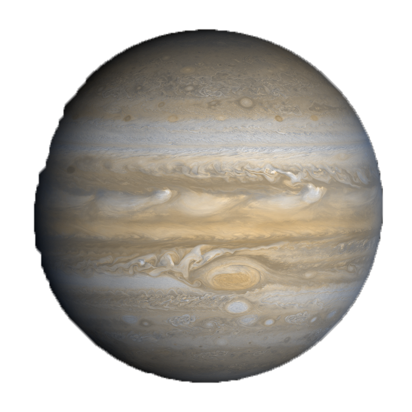

Jupiter

Top 10 Facts!
- 5th planet from the sun
- Was recorded by the Babylonian astronomers in the 7th or 8th century BC
- Jupiter is the fourth brightest object in our solar system
- A day on jupiter lasts only 9 hours and 55 minutes
- A year on jupiter lasts 11.8 years on earth
- Jupiter has a storm that has lasted 350 years and is still going
- upiter has the largest moon in the solar system Ganymede
- 8 spacecrafts have visited jupiter
- Jupiter has 2.5 more mass than all the plants in the solar system combined
- It would take 11.2 earts to make a line equal to the diameter of jupiter
Three Bonus Facts!
- Rings: jupiter has 4 rings made of dust and rocksli>
- Distance From The Sun: 483.8 million m
- Namesake: Jupiter is the roman god of the sky or a the roman version of Zeus the lord of the sky in greek mythology and he is the king of the gods
Satellite Info
Jupiter has the most moons in our Solar System with 67 moons.
|